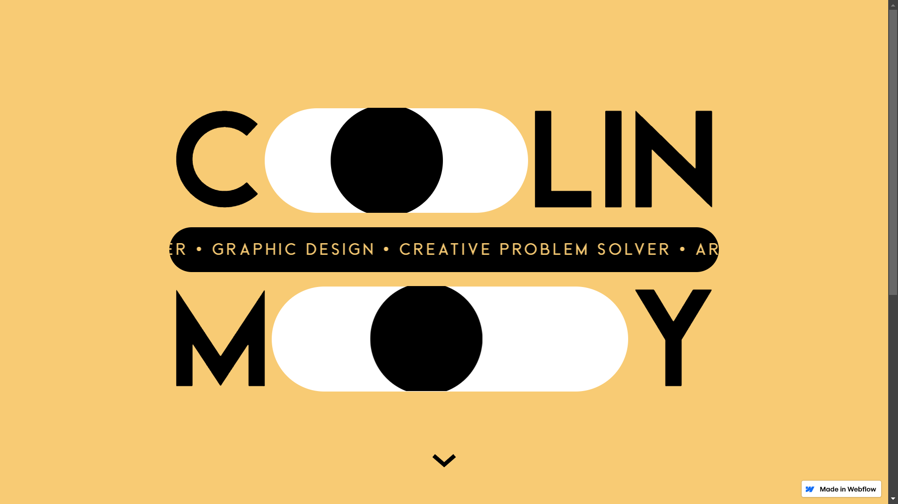

REPORT
Full Name: WONG WEI SHENG
Name: Web Development
Code: CM1040
Student ID: 230655821
Date: 9 September 2024
Introduction
Introduction: What is the essential story being told by your portfolio site? Describe the version of you that
it is about. What is the audience you are addressing? What type of structure did you choose to implement?
My portfolio site tells the story of my journey from a basketball coach to a UX Designer. I begin with my
early experiences from teaching basketball in school, where I developed essential skills in teamwork and
strategy.
During teaching basketball, I discovered a passion for user experience during my Computer
Science studies, and pursued through formal education in UI/UX Design. My portfolio site basically addresses
to find the potential clients and collaborators. The structure of the site is designed to guide the user
through my story by starting the homepage followed by about me page, work
page, service page and contact page. In the about me page, I introduce myself and also listed my skills and
hobbies to give the user a better understanding of me. On the work page and service page to attract the
clients and collaborators, I show them some of my works in different company that I worked with and the
services that I provide in the Work Page and Service. Last of all, the contact page is for the clients and
collaborators to contact me for any inquiries or collaborations.
Inspiration
Inspiration: State 3 relevant professional portfolio sites (not advice articles or templates) that have
inspired
you
when creating your website. Say what you have learned from them.
1.Agustin Burgos : https://agustinburgos.com/
Agustin Burgos is a UX Designer and Front-End Developer. I learned from his site that the design of the site
is with a lot of animation such as scrolling animation, hover animation and also the design of the site is
very clean and simple. The site is also very user-friendly and easy to navigate. The site also has a lot of
white space which makes the site looks clean and neat. The site also has a lot of images and videos which
makes the site looks more attractive and interesting.
2.Colin Moy https://colin-moy.webflow.io/
Colin Moy is a UX Designer and Front-End Developer. I learned from his site that the design of the site is

3.XXXXXXXXXX #
xxxxxxxxxxxxxxxxxxxxxxxxxxxxxx

Accessibility
Accessibility: State 3 ways in which your site is accessible to those with different abilities and needs (for
example those with visual impairment)
Usability
Usability: State 3 ways in which you considered the usability of your site.
Learning
Learning: state 3 things you had to learn or find out to create your site. How did you achieve that?
Evaluation I
Evaluation I: What aspects of your work do you think were particularly successful? Why?
Evaluation II
Evaluation II: What aspects of your work could be improved? How might you do things differently another time?
Resources
Resources: What resources did you use in your work? List any sources of information, libraries, plugins, code or
tools (you should also indicate inclusions from other sources within your code using comments)
Appendices
Appendices: Site map (if useful), wireframes and mock-ups